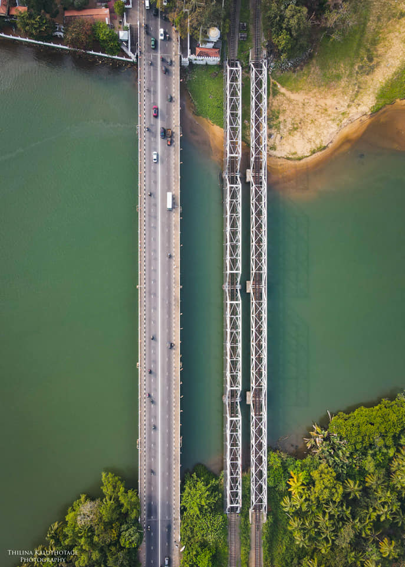
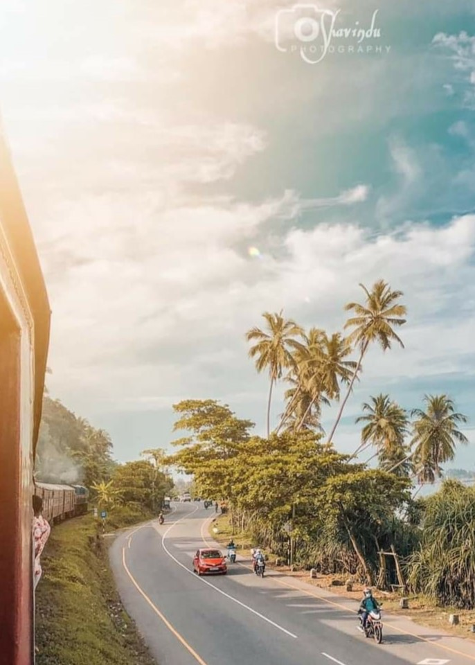
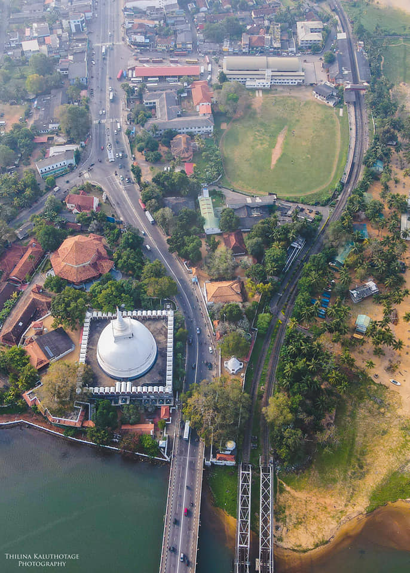

Escape to an enchanting wonderland
|
Kalutara, Sri lanka
|
Kalutara or Kalutota, is a coastal town in the west coast of
Sri Lanka and is the perfect spot for a nice family vacation.
The town holds some lovely beaches, where you can go to enjoy
some peaceful time in nature. Kalutara has a lot of heritage sites, which speaks of the rich history and ethnicity of the place.Starting from ‘Kalutara Chaitya’, a Buddhist worship place, which consists of a hollow stupa, the only one in the entire world. There are other attractions like the Richmond Castle and the Asokaramaya Temple. The Calido beach is a must visit, when you go for vacation in this lovely place and there are many beautiful and luxurious beach resorts that you can dwell in while on your stay in Kalutara. Not only this, you will find some of the best and freshest seafood in Kalutara. Starting from lobster to cuttlefish and many other fish delicacies. Mangosteen, a juicy fruit with a fleshy white core and a purple cover is native to this region and Kalutara is the biggest hub for producing Mangosteen. Go through this Kalutara, Sri Lanka travel to know more in detail about this lovely, exotic location. |
||
|  |  |  |
|---|---|---|